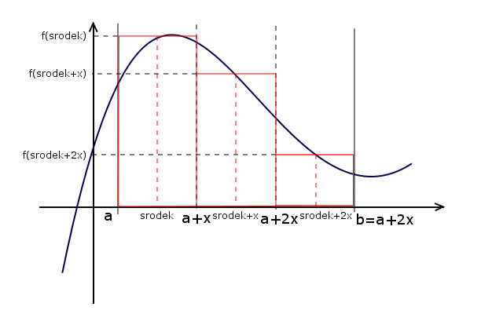
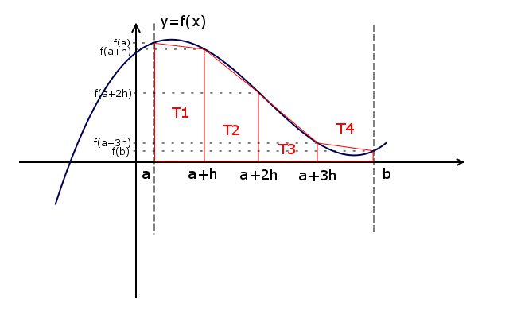

Obliczanie pola obszaru ograniczonego
Jeszcze jednym zastosowaniem algorytmów numerycznych jest obliczanie pola obszaru ograniczonego np. wykresem.
Metody obliczania
Metoda prostokątów
W celu obliczenia pola obszaru pod wykresem dzielimy je na wiele prostokątów i dodajemy ich pola. Ta metoda nie jest zbyt dokładna ze względu na pomijanie fragmentów przy pochyłych częściach wykresu. Ten problem częściowo rozwiązuje następna z metod.
Przykład podziału obszaru

Przykład programu
#include<iostream> #include<iomanip> using namespace std; double f(double x) { //funkcja zawsze przyjmuje wartosci dodatnie //wiec mozna pominac wartosc bezwzgledna return x*x+x+2; } double Pole(int a, int b, int n) { double x = (b-a)/(double)n; //pierwszy bok - kazdy prostokat ma taki sam double S = 0.0; //zmienna bedzie przechowywać sume pol trapezow double srodek = a+(b-a)/(2.0*n); //srodek pierwszego boku for(int i=0;i<n;i++) { S+=f(srodek); //obliczenie wysokosci prostokata srodek+=x; //przejscie do nastepnego srodka } return S*x; } int main() { int a, b, n; cout<<"Podaj przedzial [a, b]\na = "; cin>>a; cout<<"b = "; cin>>b; cout<<"Podaj liczbe trapezow: "; cin>>n; if(!(a<b)) cout<<"To nie jest przedzial!"; else cout<<"Pole figury wynosi: "<<fixed<<setprecision(2)<<Pole(a, b, n); cin.ignore(); cin.get(); return 0; }
Metoda trapezów
Ta metoda pozwala nam na dokładniejsze przybliżenie pola obszaru pod wykresem, ponieważ trapez o wiele lepiej wpasowuje się w pochyłe fragmenty wykresu.
Przykład podziału obszaru

Przykład programu
#include<iostream> #include<iomanip> using namespace std; double f(double x) { //funkcja zawsze przyjmuje wartosci dodatnie //wiec mozna pominac wartosc bezwzgledna return x*x+x+2; } double Pole(int a, int b, int n) { double h = (b-a)/(double)n; //wysokosc trapezow double S = 0.0; //zmienna bedzie przechowywac sume pol trapezow double podstawa_a = f(a), podstawa_b; for(int i=1;i<=n;i++) { podstawa_b = f(a+h*i); S += (podstawa_a+podstawa_b); podstawa_a = podstawa_b; } return S*0.5*h; } int main() { int a, b, n; cout<<"Podaj przedzial <a , b>\na = "; cin>>a; cout<<"b = "; cin>>b; cout<<"Podaj liczbe trapezow: "; cin>>n; if(!(a<b)) cout<<"To nie jest przedzial!"; else cout<<"Pole figury wynosi: "<<fixed<<setprecision(2)<<Pole(a, b, n); cin.ignore(); cin.get(); return 0; }
Zadanie
Oblicz pole obszaru przy użyciu różnych parametrów i porównaj dokładność obu metod.